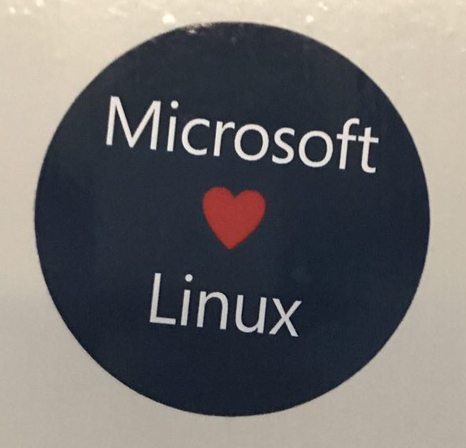

From Free Software to Startups - A journey by Igor Stamatovski
www.iborn.net
Skopje October 2017
At the begining there was Free Software
Слободен софтер
Four freedoms
- The freedom to run the program as you wish, for any purpose (freedom 0).
- The freedom to study how the program works, and change it so it does your computing as you wish (freedom 1). Access to the source code is a precondition for this.
- The freedom to redistribute copies so you can help your neighbor (freedom 2).
- The freedom to distribute copies of your modified versions to others (freedom 3). By doing this you can give the whole community a chance to benefit from your changes. Access to the source code is a precondition for this.
Free Software Macedonia
Advocacy and policy
15 years aniversary
Слободен софтер
Hacklab KIKA
The practical fun part
8 years aniversary
There is no Hell0 World - (A)way(F)rom(K)eyboard
Learn
Explore
Contribute
Then there came IBORN.NET
Founded in 2012, 10 years after 2C.MK and 3 years after KIKA
I can use my knowledge and experience from participation
Colaboration
Community
Contribution
Free and Non Free Software at the begining
Redmine - Beats JIRA each and every day
GIT
MySQL
.NET Web Development and Databases
Using free software to do work for the United Nations
United Nations Security Council Sanctions Comittee - Drupal
United Nations Counter-Terrorism Implementation Task Force - Drupal
Another startup
Najdidom.mk
- Python
- Django
- MySQL
Then this happened

And almost all our stack became free
https://github.com/Microsoft
- .NET Core
- Entity Framework
- .NET Compiler
- Visual Studio Code
- TypeScript
Github as a social network
Github/Bitbucket profile as your CV
http://github.com/igorstama/
https://www.linkedin.com/in/istamatovski/
Learn and acquire experience
Collaborate and communicate
Profit!
THANK YOU!
Ако сакате да ни се придружите пишете ни на